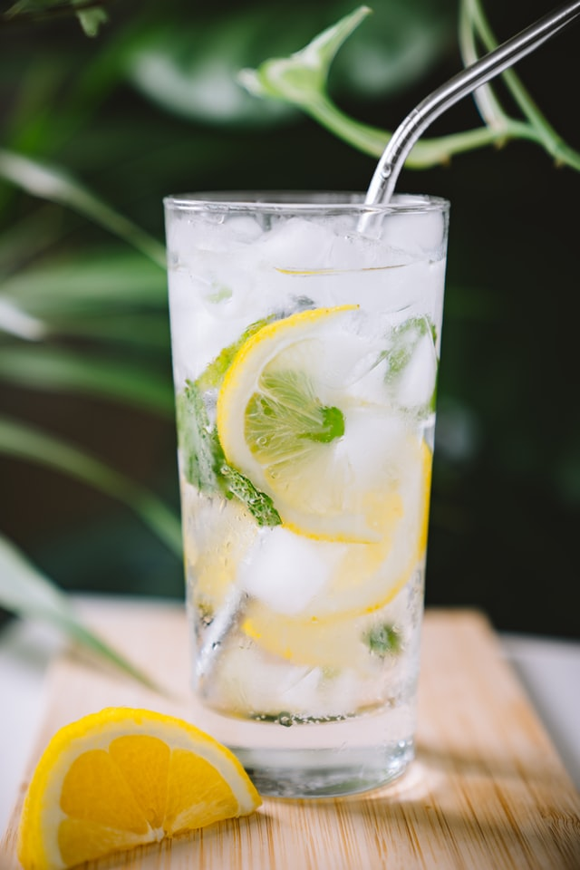

Limonada Refrescante

Ingredientes
- 100 ml de calda de açúcar
- 1200 ml de água
- Sumo de 2 a 3 limões
- 1 limão cortado em pedaços
Modo de Preparo
1. Para a calda de açúcar, levar 100g de açúcar num tacho ao lume com 100g de água e a casca de 1 limão. Assim que começar a ferver, contar 5 minutos antes de retirar do lume. Deixar arrefecer, descartando a casca de limão. Deixar arrefecer.
2. Colocar a calda de açúcar num jarro. Adicionar o sumo de limão, a água e o limão cortado. Mexer.
3. Adicionar cubos de gelo e servir.
Se gostarem, podem usar água com gás. Eu costumo fazer mais calda de açúcar, guardar no frigorífico e depois ir usando. A quantidade de calda e de sumo de limão deve ser adaptada ao gosto pessoal.
Ingredientes
- 100 ml de calda de açúcar
- 1200 ml de água
- Sumo de 2 a 3 limões
- 1 limão cortado em pedaços
Modo de Preparo
1. Para a calda de açúcar, levar 100g de açúcar num tacho ao lume com 100g de água e a casca de 1 limão. Assim que começar a ferver, contar 5 minutos antes de retirar do lume. Deixar arrefecer, descartando a casca de limão. Deixar arrefecer. 2. Colocar a calda de açúcar num jarro. Adicionar o sumo de limão, a água e o limão cortado. Mexer. 3. Adicionar cubos de gelo e servir. Se gostarem, podem usar água com gás. Eu costumo fazer mais calda de açúcar, guardar no frigorífico e depois ir usando. A quantidade de calda e de sumo de limão deve ser adaptada ao gosto pessoal.